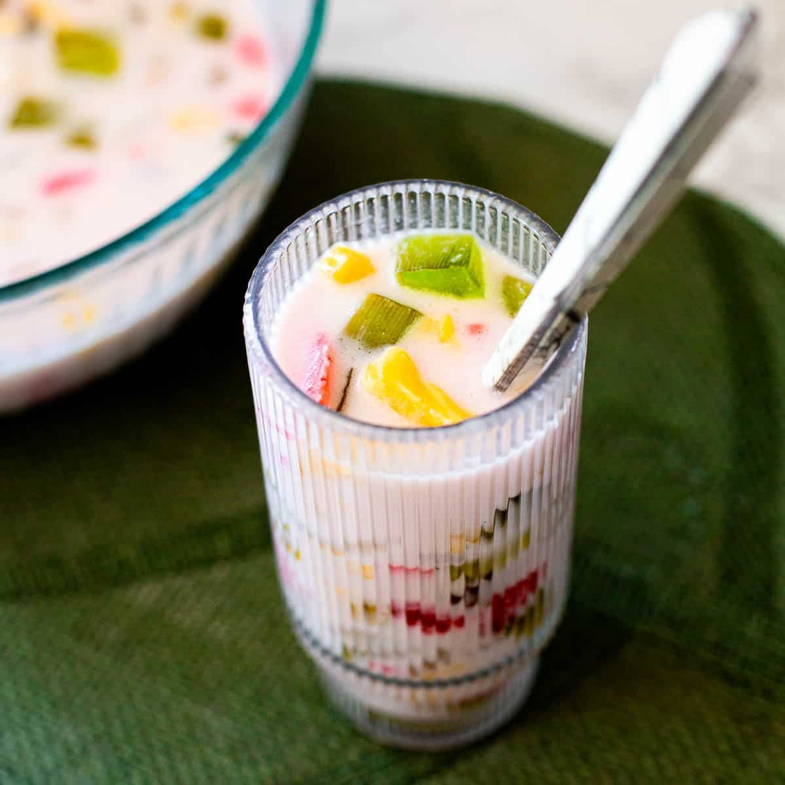

Chè Full Recipe  Ingredients for layers of Chè Red bean layer: 1 cup of red beans, 1/2 a cup of sugar and water Green jelly layer: 1/2 cup of mung bean starch (or green jelly mix), 2 cups of water, 2 tbsp of sugar and optional but, green food coloring Yellow Mung bean Paste: 1/2 cup of hulled mung beans and 1/4 cup of sugar Coconut Milk Sauce: 1 cup of coconut milk, 2 tbsp of sugar, 1/4 tbsp of salt, and 1 tbsp of tapioca starch (this is optional and makes the desert more thick) Directions Prepare the red beans: Rinse and soak red beans overnight. Cook the beans in a pot with water until tender (about 1-1.5 hours). Add sugar to the beans and simmer until the liquid becomes syrupy. Set aside. Make the green mung bean jelly: Mix mung bean starch, water, and sugar in a pot. Heat over medium heat, stirring constantly until the mixture thickens. Add green food coloring (if desired). Pour into a shallow tray to set. Once firm, cut into small cubes or strips. Prepare the yellow mung bean paste: Soak the mung beans for at least 2 hours. Steam until soft, then blend into a smooth paste. Cook the paste in a pan with sugar over low heat, stirring frequently, until thick. Set aside to cool. Make the coconut milk sauce: In a small saucepan, combine coconut milk, sugar, and salt. Heat gently, stirring occasionally. For a thicker consistency, dissolve tapioca starch in a little water and stir it into the sauce. Cook for another minute. Remove from heat. Assemble the chè: In a tall glass, layer the red beans at the bottom. Add a layer of green jelly cubes. Spoon the yellow mung bean paste on top. Pour a generous amount of coconut milk sauce over the layers. Top with crushed ice and garnish with pandan leaves (optional).